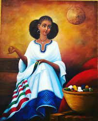
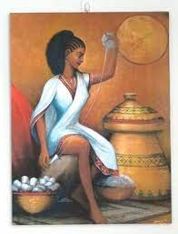
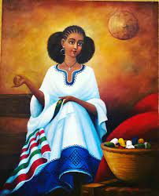
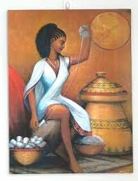

Embracing Ethiopian culture
 



Sefed is a traditional basket made of dyed grass straws and palm leaves.
The habesha kemis is the traditional clothing of women in Ethiopia. This ankle length, chiffon-made, snow white dress is usually worn at formal events.
The main artistic expressions have been architecture, painting and goldsmithing.
Weaving is a pillar of Ethiopian culture. Most Ethiopians wear hand woven, white clothing at all ceremonies and holidays.
I have always been deeply interested in art and handmade artifacts. My interest has taken me on a road, not always smooth, but endlessly enriching and full of surprises.
-Meaza Tsegaye, Founder
Ready to learn more!
Enquire by clicking that button right over there.